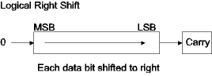
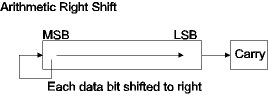
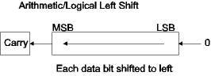
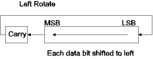
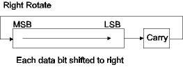

| Previous Section | Next Section | Index | Questions | Search the Text |
Shift instructions are used for positioning bits within bytes and for quick multiplication and division by powers of two. The positioning use is primarily when individual bits represent Boolean values, and discussion of this use is deferred until the section Decision Trees and Logic Instructions.
In a logical right shift operation, the contents of the data byte (or word) areshifted such that each bit moves to the right (lower significance position). A 0 is shifted into the most significant bit, and the bit shifted out on the right is stored in the carry condition code bit. If the data represents an unsigned integer, a logical right shift will divide its value by 2.

The provided instructions are:
These instructions set the condition codes to indicate if the resulting value is positive or zero (it cannot be negative). The lsr instruction allows extended and indexed addressing modes. A few examples:
| Initial value (binary) | Value after logical right shift (binary) | Final condition code bits |
|---|---|---|
| 0 1 1 1 0 1 0 0 | 0 0 1 1 1 0 1 0 | Z=0 C=0 N=0 V=0 |
| 1 1 1 1 0 1 0 0 | 0 1 1 1 1 0 1 0 | Z=0 C=0 N=0 V=0 |
| 0 0 0 0 0 0 0 1 | 0 0 0 0 0 0 0 0 | Z=1 C=1 N=0 V=1 |
To perform a right shift of a signed integer value, it is necessary to maintain the sign bit rather than shift in a zero. The arithmetic right shift operation shifts in the original value of the most significant bit. This operation has the effect of dividing the value by two, however it is a flooring division in that the quotient is truncated in toward the more negative value. This means that -2 right shifted is -1, while -1 right shifted is still -1. A negative value can never be right shifted to become zero.

The provided instructions are:
Note that there is no instruction to arithmetic shift accumulator D, however we will shortly show a solution to this absence. These instructions set the condition codes to indicate if the resulting value is positive, negative, or zero. The asr instruction allows extended and indexed addressing modes. Examples:
| Initial value (binary) | Value after logical right shift (binary) | Final condition code bits |
|---|---|---|
| 0 1 1 1 0 1 0 0 | 0 0 1 1 1 0 1 0 | Z=0 C=0 N=0 V=0 |
| 1 1 1 1 0 1 0 0 | 1 1 1 1 1 0 1 0 | Z=0 C=0 N=1 V=1 |
| 0 0 0 0 0 0 0 1 | 0 0 0 0 0 0 0 0 | Z=1 C=1 N=0 V=1 |
There is only one left shift operation that works for both signed and unsigned values. All bits are shifted to the left, with a 0 being shifted into the least significant bit and the value shifted out being stored in the carry bit of the condition code register. The effect of a left shift instruction on an integer value is to multiply it by two, which is to add the value to itself.

The provided instructions are:
The two mnemonics, arithmetic and logical, refer to the same instruction. The memory byte shift allows the extended and indexed addressing modes. Condition codes are set based on the result being negative, zero, or positive, and overflow is indicated if the value shifted is signed and the shift causes an overflow. Examples:
| Initial value (binary) | Value after logical right shift (binary) | Final condition code bits |
|---|---|---|
| 0 1 1 1 0 1 0 0 | 1 1 1 0 1 0 0 0 | Z=0 C=0 N=1 V=1 |
| 1 1 1 1 0 1 0 0 | 1 1 1 0 1 0 0 0 | Z=0 C=1 N=1 V=0 |
| 0 0 0 0 0 0 0 1 | 0 0 0 0 0 0 1 0 | Z=0 C=0 N=0 V=0 |
| 1 0 0 0 0 0 0 0 | 0 0 0 0 0 0 0 0 | Z=1 C=1 N=0 V=1 |
Rotates exist for both directions. The difference between a rotate and a logical shift is that the bit shifted in is the original value of the carry bit in the condition code register. Nine sequential rotates will return the data to its original value. Rotate instructions are used primarily to implement extended-precision arithmetic.


The following rotate instructions are provided:
The memory instructions allow extended or indexed addressing modes. These instructions set the condition codes identically to their shift instruction counterparts.
Here is how one does an arithmetic right shift of register D:
asra ; Arithmetic right shift of most significant byte
rorb ; Rotate right least significant byte, which shifts
; into the most significant bit position the least
; significant bit shifted out of the most significant
; byte (got that?)
The rule for multi-precision right shifts is that you start with an arithmetic or logical right shift (as appropriate for the type of data) of the most significant byte, then perform right rotates of the remaining bytes toward the least significant byte. The rule for multi-precision left shifts is that you start with a left shift of the least significant byte then perform left rotates of the remaining bytes toward the most significant byte. The following code will multiply the 4 byte value starting at location $820 by 2:
lsl $823 ; left shift least significant byte
rol $822 ; left rotate remaining bytes ...
rol $821
rol $820 ; with most significant byte last
Continue with test and compare.
Return to the Index.